In the menubar, click on Workplane then At Origin, XY Plane.
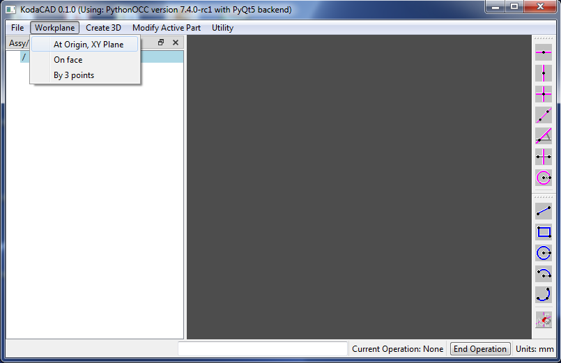wp1 is created in the X-Y plane of the global coordinate system. It is Active (as signified by the green background color in tree view). Also notice that a pair of construction lines has been created. One horizontal and one vertical. They intersect at a point (shown as a yellow '+' symbol) which is located at the workplane's (u=0, v=0) coordinates. Every workplane will have its own (u, v, w) local coordinate system. If you think of the workplane as being represented by a sheet of paper laying on a table in front of you, u is the horizontal direction to the right, v is the vertical direction away from you, and w is the direction normal to the paper (out of the table).
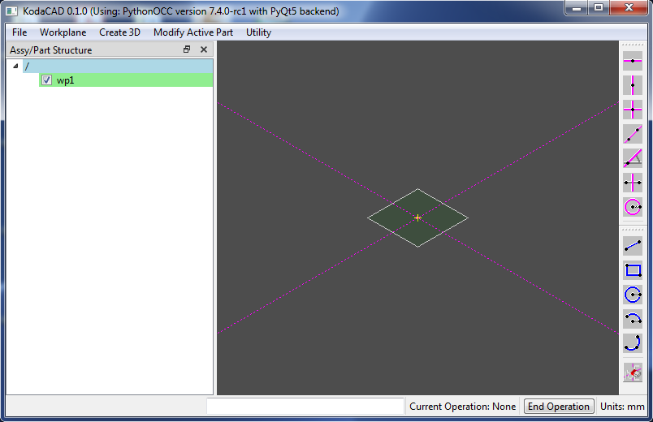Now zoom in using one of these techniques:
Click on top-most toolbar button (Horizontal Construction line), then Enter 30 into the User Input widget.
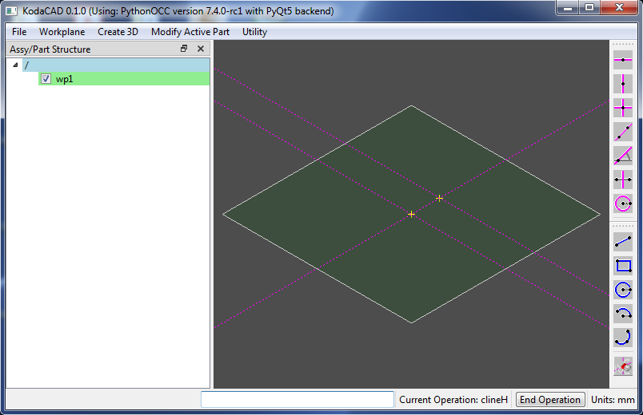Draw 5 more construction lines at the following values: 15, 7.5, -7.5, -15, -30 and zoom in a bit more.
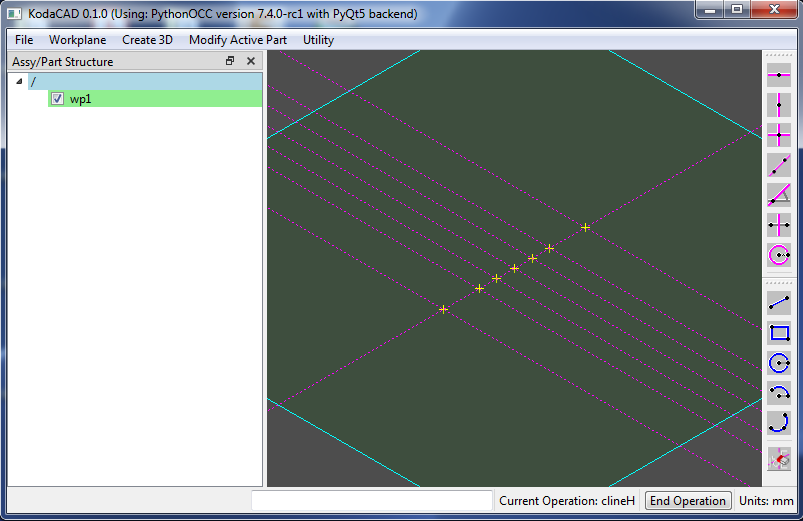Click on "construction circe" toolbar button, then click on the point at 0, 30 (center of circle), then point at 0, -15.
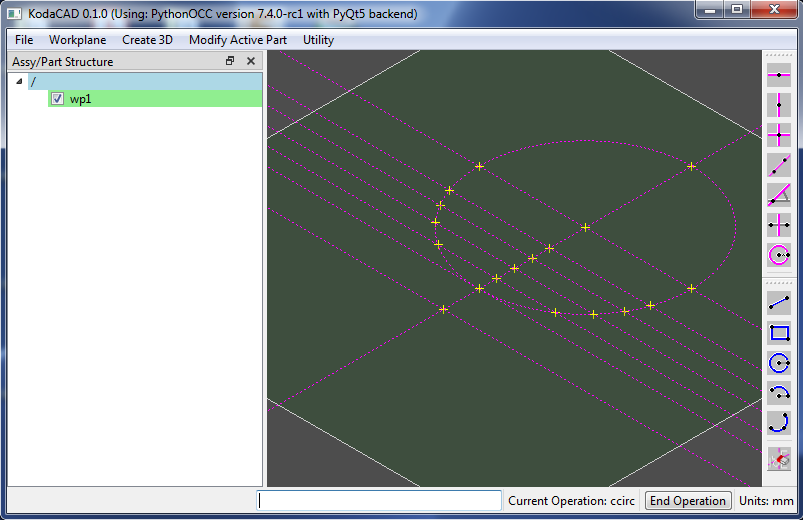Draw a second construction circle by first entering the coordinates of its center (0,-30) but without the parentheses, then enter the value 45 for the radius.
In general, when a 2d point is needed, you have the option of either clicking on a point or entering the point coordinates in the User Input widget. When in doubt, check the status bar in the lower left corner to find out what data is expected next.
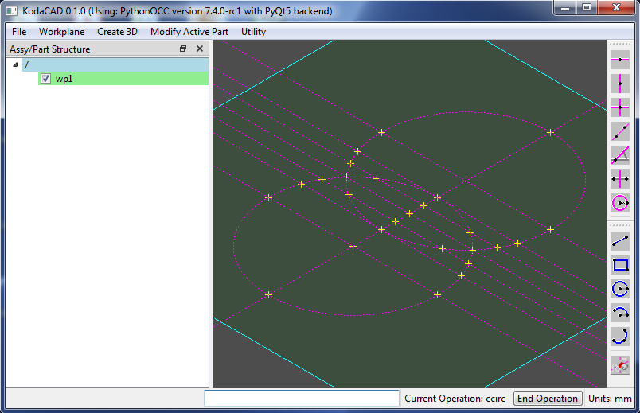Click on the (blue) line toolbar button and then add two lines as shown by clicking on the end points. Next, use the Arc by3Pts tool to create two arcs. (Clicking order is end, mid, end.) The profile is now complete. It needs to be a closed loop, otherwise the next step won't work.
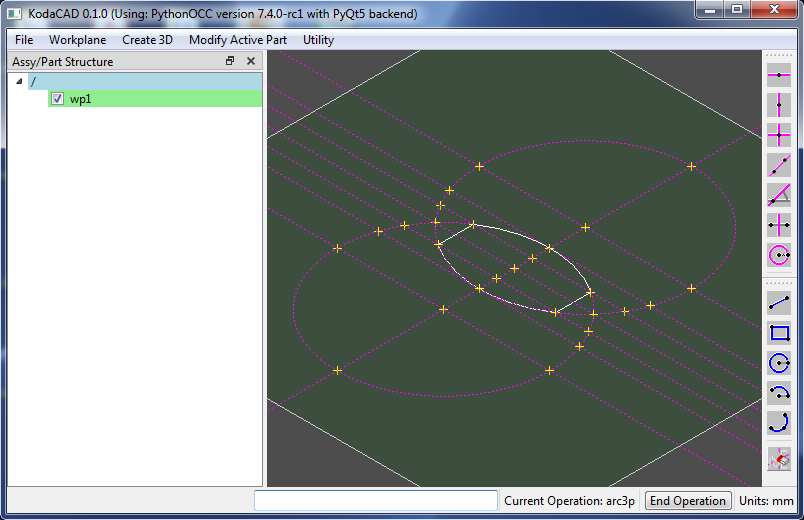In the menubar, click on Create 3D then Extrude. Enter 70 for the extrusion distance and enter Bottle for the name.
The new part Bottle is now displayed in both the 3D Display window and in the Tree View widget. Notice also that the Tree View shows Bottle highlighted in yellow, signifying that this is the Active part. It is important to remember which part is active, because any subsequent modifications will be carried out on the Active part.
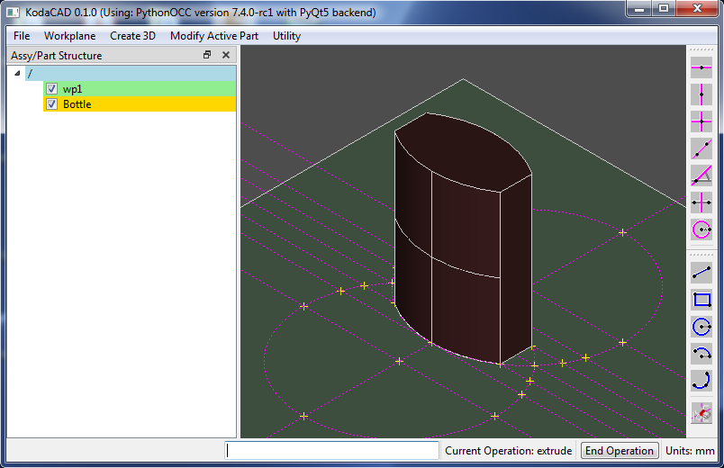Hide wp1 from the display widow by unchecking its checkbox in the Tree View. This is done to make sure that we don't accidentally select profile lines in the next step.
In the menubar, click on Modify Active Part then Fillet. Carefully select all 12 edges (one by one) of the Bottle. (I know this is a pain. Box select would be really handy, but it's not implemented yet.) Enter the fillet radius value of 3.
A new Bottle part (with the same name) has been created and made active. The old part is still there but blanked from view (and no longer active). The old part is an Ancestor of the new part.
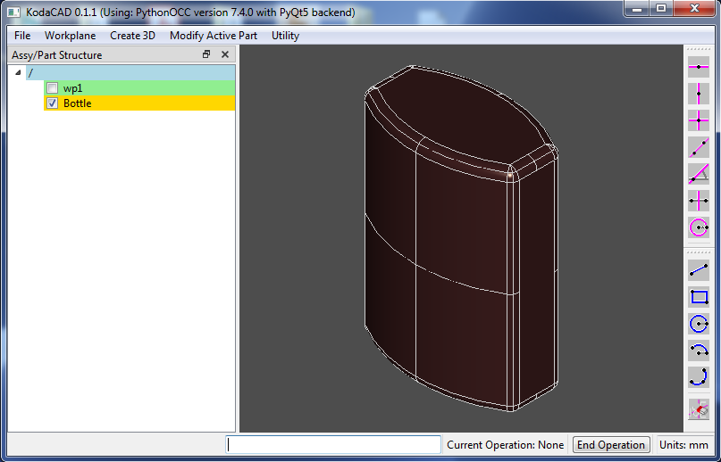In the menubar, click on Workpane then On face. Select the top face of the bottle. (The face normal will be the w direction of the new workplane.) Now select one of the flat side faces. (The face normal will be the u direction of the new workplane.) A new workplane w2 is now be created (and is active). Its 0,0 coordinates are located at the center of the bottle's top face.
Next, make a Profile circle on w2 with center at 0,0 and radius = 7.5.
Now click on Create 3D then Extrude. Enter 7 for the extrusion distance and enter Neck for the name.
The Neck is created and is now the active part.
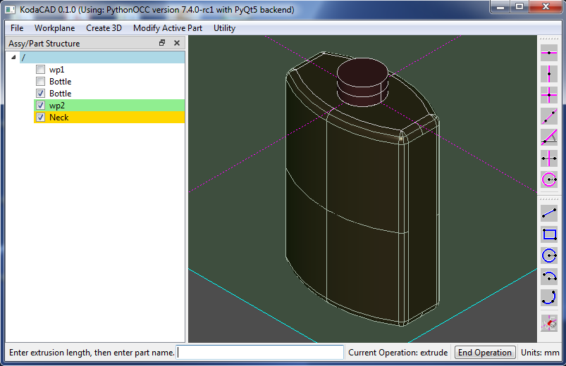In the Tree View, hide wp2 by unchecking its box. We no longer need to see that. Now left click on the most recently created Bottle (still with a check mark), then right click and select Set Active. By setting the Bottle active, we can fuse the Neck to the Bottle rather than the other way around.
Now click on Modify Active Part then Fuse. Click on the Neck in the 3D Display window. (Clicking the Neck in the Tree View window won't work (yet).)
A new Bottle is now created and is set active. Uncheck the check box of the Neck. We don't need to see that any longer.
Just for fun, try filleting the base of the neck with a radius value of 2 before shelling.
Now in the menubar, click on Modify Active Part then Shell. Click first on the top circular face of the bottle, then enter a shell thickness of 1.
The final Bottle is comlete.
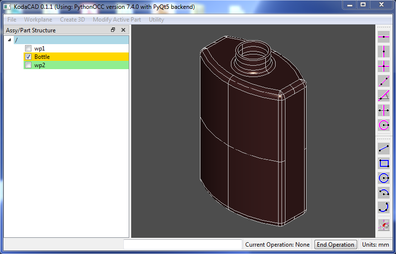